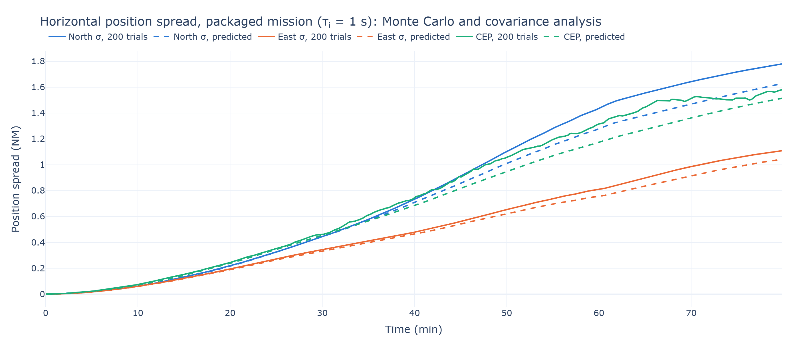
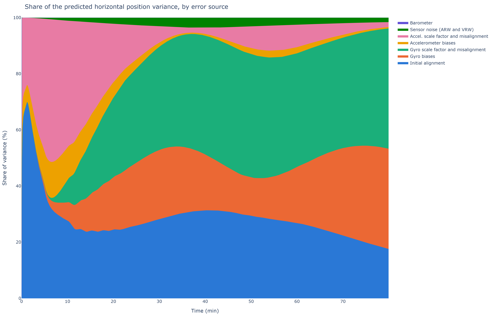

Covariance analysis¶
A Monte Carlo evaluation measures the spread of the navigation errors by flying the mission many times with random sensor errors. A covariance analysis predicts the same spread in a single pass. It propagates the covariance of the errors, the matrix of their variances and correlations, through the navigator's error equations linearized along the truth trajectory. When the errors stay small, the two agree. The prediction then costs about as much as one Monte Carlo trial, has no sampling noise, and splits the total into each error source's share, because a linear model's variances add. In the app, the prediction is the dashed lines on the error tabs and the Error Budget tab.
Key results
- The error state has 43 components, one for each error the simulator draws: navigation errors, the barometer loop's integrator, biases, scale factors and misalignments, and the barometer's errors.
- The system matrix \(\mathbf{F}\) is the exact first-order expansion of the navigator's equations along the truth. Fed one trial's constant errors, the linear model follows the navigator to within 1%.
- On the packaged mission, the spread of 200 Monte Carlo trials lies within the 95% sampling band of the prediction, 34 times out of 36 (see Validation).
- The error budget gives each source's share of the variance; the shares add up to the total exactly.
Physical picture¶
flowchart LR
SPEC["IMU spec"] -->|"initial spreads"| P0["P(0)"]
SPEC -->|"noise densities"| Q["Q"]
TRUTH["Truth trajectory"] -->|"linearize along it"| F["F(t)"]
P0 --> PROP["Propagate P(t)"]
Q --> PROP
F --> PROP
PROP --> OUT["σ of each error,<br/>CEP, error budget"]The INS error model page derives how each error source grows, one source at a time on a stationary IMU. A covariance analysis keeps every source and every coupling at once, along the real flight: the turns that swing a heading error into the horizontal channels, the climbs that excite the scale factors, the barometer loop that holds the height. It does so for the whole distribution of errors at once, rather than for one draw of them.
Continuous-time model¶
Error state¶
| States | Symbols | Count | Unit |
|---|---|---|---|
| Attitude error | \(\delta\psivec{nb}{n}\) | 3 | rad |
| Velocity error | \(\delta\vvec{eb}{n}\) | 3 | m/s |
| Position error | \(\delta L_b\), \(\delta\lambda_b\), \(\delta h_b\) | 3 | rad, rad, m |
| Barometer loop integrator | \(\delta a_c\) | 1 | m/s² |
| Accelerometer biases, static and Gauss–Markov | \(\mathbf{b}_{as}\), \(\mathbf{b}_{ad}\) | 6 | m/s² |
| Gyro biases, static and Gauss–Markov | \(\mathbf{b}_{gs}\), \(\mathbf{b}_{gd}\) | 6 | rad/s |
| Scale factor and misalignment | \(\mathbf{M}_a\), \(\mathbf{M}_g\), row by row | 18 | – |
| Barometer errors | \(s_b\), \(b_{bs}\), \(b_{bd}\) | 3 | –, m, m |
The errors are those of Notation & conventions: estimate minus truth. Position is kept as latitude, longitude and height, whose equations are simplest, and converted to metres North, East and Down at the end.
Navigation errors¶
Subtracting the true navigation equations from the navigator's, and keeping the first-order terms, gives
where:
- \(\delta\wvec{ib}{b}\) and \(\delta\fvec{ib}{b}\) are the gyro and accelerometer errors, below [rad/s, m/s²];
- \(\delta\wvec{ie}{n} = \partial\wvec{ie}{n}/\partial L_b\;\delta L_b\) and \(\delta\wvec{en}{n}\) are the errors in the computed Earth and transport rates, which follow from the velocity, latitude and height errors through \(\wvec{en}{n} = \left(\tfrac{v_E}{R_E + h_b},\ -\tfrac{v_N}{R_N + h_b},\ -\tfrac{v_E\tan L_b}{R_E + h_b}\right)\) [rad/s];
- \(\delta\wvec{in}{n} = \delta\wvec{ie}{n} + \delta\wvec{en}{n}\) [rad/s];
- \(\delta g\) is the error in the computed gravity, from the latitude and height errors, and \(\mathbf{u}_D\) the Down unit vector [m/s²];
- the position equations are expanded to first order in \(\delta v_N\), \(\delta v_E\), \(\delta L_b\) and \(\delta h_b\), including the change of \(R_N\) and \(R_E\) with latitude [rad/s, m/s].
Every coefficient is evaluated on the truth trajectory, so \(\mathbf{F}\) changes along the flight. The simplified equations of the INS error model page are these with the transport-rate and vertical terms dropped.
Sensor and barometer errors¶
The static biases, scale factors, misalignments, \(s_b\) and \(b_{bs}\) are constant. With baro aiding the height residual
drives the damping loop: \(\delta\dot h_b \mathrel{-}= K_1\rho\), \(\delta\dot v_D \mathrel{+}= K_2\rho + \delta a_c\) and \(\delta\dot a_c = K_3\rho\).
where:
- \(\mathbf{w}_g\), \(\mathbf{w}_a\) and \(w_b\) are white noises of density ARW, VRW and the barometer's noise density;
- \(\tau_g\), \(\tau_a\) and \(\tau_b\) are the Gauss–Markov correlation times, and \(\mathbf{w}_{gd}\), \(\mathbf{w}_{ad}\), \(w_{bd}\) their driving noises, of density \(2\sigma^2/\tau\) for a steady-state spread \(\sigma\);
- \(K_1 = 3/\tau\), \(K_2 = 3/\tau^2\), \(K_3 = 1/\tau^3\) are the loop gains, \(\tau\) = 100 s.
Covariance¶
With \(\mathbf{x}\) the 43-component state, these equations are \(\dot{\mathbf{x}} = \mathbf{F}(t)\,\mathbf{x} + \mathbf{w}\), and the covariance \(\mathbf{P} = \mathrm{E}[\mathbf{x}\mathbf{x}^{\mathsf T}]\) obeys
where:
- \(\mathbf{P}(0)\) holds the spreads the Monte Carlo draws from: the alignment errors, the turn-on biases, scale factors and misalignments, the barometer's scale factor and bias, and the Gauss–Markov biases at their steady-state spreads [state units²];
- \(\mathbf{Q}\) holds the white-noise densities: ARW² on the attitude errors and VRW² on the velocity errors (the same in every axis, so the rotation \(\Cmat{b}{n}\) leaves them unchanged), \(2\sigma^2/\tau\) on the Gauss–Markov biases, and the barometer noise through the loop gains [state units²/s].
Discrete-time, as implemented¶
1. System matrix at every propagation step along the truth, here its attitude and velocity rows:
# Attitude: d(delta_psi)/dt = −omega_in × delta_psi − delta_omega_in + C_b^n·delta_omega_ib^b
F[:, PSI, PSI] = -_skew(omega_ie + omega_en)
F[:, PSI, VEL] = -d_en_dv
F[:, PSI, LAT] = -(d_ie_dL + d_en_dL)
F[:, PSI, HGT] = -d_en_dh
# Velocity: d(delta_v)/dt = −(C_b^n f) × delta_psi + C_b^n·delta_f_ib^b
# − (2·omega_ie + omega_en) × delta_v + v × (2·delta_omega_ie + delta_omega_en)
# + delta_g
F[:, VEL, PSI] = -_skew(f_n)
F[:, VEL, VEL] = -_skew(2 * omega_ie + omega_en) + v_skew @ d_en_dv
F[:, VEL, LAT] = np.einsum("kij,kj->ki", v_skew, 2 * d_ie_dL + d_en_dL)
F[:, VEL, HGT] = np.einsum("kij,kj->ki", v_skew, d_en_dh)
F[:, 5, LAT] += dg_dL
F[:, 5, HGT] += dg_dh
2. Propagation over a step \(\Delta\), 1 s by default, with \(\bar{\mathbf{F}}\) the mean of \(\mathbf{F}\) at the two ends:
dt = steps[start:start + len(nodes) - 1]
# Substeps of at most a tenth of the shortest time constant keep
# the trapezoidal process noise accurate (within 0.4%).
m = np.maximum(1, np.ceil(dt / (0.1 * tau_min))).astype(int)
h = dt / m # substep [s]
Phi = expm(0.5 * (F[:-1] + F[1:]) * h[:, None, None]) # (n_steps, n, n)
for j, Phi_j in enumerate(Phi):
PhiQ = Phi_j @ Q @ Phi_j.T
for _ in range(m[j]):
P = Phi_j @ P @ Phi_j.T + 0.5 * (PhiQ + Q) * h[j]
record(start + j + 1)
The trapezoidal noise term is accurate while \(\Delta\) is short against the model's time constants. A step longer than a tenth of the shortest of them (a Gauss–Markov correlation time, or the baro loop's 100 s) is therefore split into equal substeps; that keeps a Gauss–Markov bias's variance within 0.4% of its true value. The prediction times are every \(\Delta\) from the start, plus the end of the flight, so the last step may be shorter.
3. Outputs. The position variances are converted to metres with \(R_N + h_b\) and \((R_E + h_b)\cos L_b\), as for the Monte Carlo errors. The CEP is the exact median radius of the two-dimensional Gaussian with the North–East covariance, found from its principal axes, rather than the 0.59·(σ_N + σ_E) approximation.
4. Error budget. The error sources are independent, so \(\mathbf{P}(0)\) and \(\mathbf{Q}\) are sums of one term per source, and since the propagation is linear in them, so is \(\mathbf{P}(t)\). Each source is propagated on its own, and the total is their sum.
Compared with Groves (2013)
This is the NED form of Groves' INS error-state system model1, the model a GNSS/INS Kalman filter propagates between measurements, with the simulator's own error sources as states. It keeps two terms Groves' model drops as small: the change of the radii of curvature with latitude, and of gravity with latitude. They make \(\mathbf{F}\) the exact linearization of ins_sim's navigator.
What it looks like¶

The packaged mission, flown 200 times at \(\tau_i\) = 1 s, against the prediction. The Monte Carlo spreads differ from the prediction by a few percent, as 200 trials should; the Validation page checks all nine errors.

The packaged mission's error budget. The initial alignment errors dominate the first few minutes, and the accelerometer scale factors and misalignments the climb-out. From about 15 minutes the gyro scale factors and misalignments, fed by every turn, take the largest share, and the gyro biases, whose error keeps growing, catch up with them by the end.
Assumptions & limitations¶
Assumptions & limitations
- Small errors. The model is linear, which suits a navigation-grade INS over hours. Large errors, such as a heading error of several degrees, make the Monte Carlo spread differ from the prediction.
- Gaussian statistics. The predicted CEP assumes Gaussian errors; with a linear model and Gaussian sources that holds exactly. The Monte Carlo makes no such assumption.
- Continuous time. The model integrates the error equations exactly; the navigator integrates its own equations in steps of \(\tau_i\). At \(\tau_i\) = 1 s on the packaged mission the two differ by a few percent in the turns, and at 0.1 s by under 0.5%.
- Sensor errors only. The navigator's own integration error, which the precision mechanization reduces, is not in the model. With the default truth it is zero, and with an oversampled truth it is usually far below the sensor errors.
- The mean is zero. The prediction is a spread about zero error. The Monte Carlo's mean error is zero too, up to its sampling noise.
In the code¶
| Quantity | Equation | Implemented in |
|---|---|---|
| System matrix | \(\mathbf{F}(t)\) | error_dynamics |
| Propagation, by source | \(\mathbf{P}(t)\) | error_budget, ErrorBudget |
| Total prediction | σ of each error | covariance_analysis, CovarianceResult |
| CEP | median radius | gaussian_cep |
| Dashed lines and Error Budget tab | – | figure_error_budget and _bands_figure in ins_sim/gui/figures.py |
This example prints the error budget of the half-hour training flight of Writing a mission, and the CEP of 50 Monte Carlo trials of the same flight for comparison:
"""Which error source dominates? The covariance analysis's error budget for the training flight."""
from pathlib import Path
import numpy as np
from ins_sim.config import default_imu_spec_path
from ins_sim.evaluation.covariance import error_budget
from ins_sim.evaluation.errors import position_error
from ins_sim.evaluation.monte_carlo import run_monte_carlo
from ins_sim.sensors.imu import load_imu_spec
from ins_sim.trajectory.kinematics import build_trajectory
MISSION = Path(__file__).parent / "missions" / "training_flight.yaml"
truth, _, _ = build_trajectory(str(MISSION), tau_i=2.0)
spec = load_imu_spec(str(default_imu_spec_path()))
budget = error_budget(truth, spec)
def horizontal_variance(part):
"""North plus East position variance at the end of the flight [m²]."""
return part.var[-1, 6] + part.var[-1, 7]
print(f"After {truth.t[-1] / 60:.0f} min CEP alone share of the variance")
for source, part in budget.by_source.items():
share = 100 * horizontal_variance(part) / horizontal_variance(budget.total)
print(f" {source:38s} {part.cep[-1]:5.0f} m {share:5.1f}%")
print(f" {'All sources together':38s} {budget.total.cep[-1]:5.0f} m")
# The same flight, flown 50 times with random errors.
mc = run_monte_carlo(truth, spec, n_trials=50, seed=42)
delta_r_eb_n = position_error(mc.est_L_b, mc.est_lambda_b, mc.est_h_b,
truth.L_b, truth.lambda_b, truth.h_b)
cep = np.median(np.hypot(delta_r_eb_n[:, -1, 0], delta_r_eb_n[:, -1, 1]))
print(f" {'Monte Carlo, 50 trials':38s} {cep:5.0f} m")
After 27 min CEP alone share of the variance
Initial alignment 395 m 30.0%
Gyro biases 430 m 31.8%
Gyro scale factor and misalignment 218 m 9.0%
Accelerometer biases 182 m 5.7%
Accel. scale factor and misalignment 347 m 20.8%
Sensor noise (ARW and VRW) 125 m 2.7%
Barometer 3 m 0.0%
All sources together 759 m
Monte Carlo, 50 trials 796 m
References¶
-
Groves (2013), Chapter 14 for the INS error-state system model, and Chapter 3 for the propagation of the error covariance. ↩